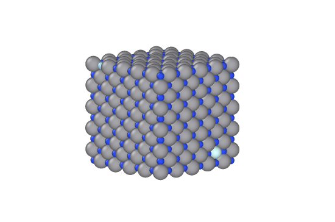

Fysik och simulering
Monte Carlo-simulering av vakanser i vanadiumnitrid
Projektet undersökte hur placeringen av vanadin- och kvävevakanser påverkar den relaxerade energin hos vanadiumnitrid. Jag utvecklade ett Python-program som skapade vakanskonfigurationer och genomförde Metropolis Monte Carlo-simuleringar där vakanser och atomer bytte plats inom respektive undergitter.
Efter varje föreslaget byte relaxerades atomernas positioner med BFGS-algoritmen i ASE. Energi, krafter och spänningar beräknades med en maskininlärd NequIP/Allegro-potential. Simuleringarna GPU-accelererades med CUDA och kördes som SLURM-jobb på Sigma-klustret.
Simuleringar utfördes med olika startkonfigurationer, antal Monte Carlo-steg, temperaturer och vakanskoncentrationer. De lägsta energierna jämfördes med startkonfigurationerna och vakansavstånden analyserades för att undersöka möjliga ordningstendenser.
Samtliga undersökta körningar hittade konfigurationer med lägre energi än de slumpmässiga startkonfigurationerna, vilket visade att vakansernas relativa placering har mätbar betydelse. Resultaten pekade samtidigt inte på någon enkel och allmängiltig klustringsregel: energin berodde på den detaljerade placeringen av båda vakanstyperna och på simuleringens start- och samplingsvillkor.